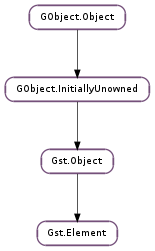

| static | make_from_uri(type, uri, elementname) |
| static | register(plugin, name, rank, type) |
| static | state_change_return_get_name(state_ret) |
| static | state_get_name(state) |
| abort_state() | |
| add_pad(pad) | |
| change_state(transition) | |
| continue_state(ret) | |
| create_all_pads() | |
| get_base_time() | |
| get_bus() | |
| get_clock() | |
| get_compatible_pad(pad, caps) | |
| get_compatible_pad_template(compattempl) | |
| get_factory() | |
| get_request_pad(name) | |
| get_start_time() | |
| get_state(timeout) | |
| get_static_pad(name) | |
| is_locked_state() | |
| iterate_pads() | |
| iterate_sink_pads() | |
| iterate_src_pads() | |
| link(dest) | |
| link_filtered(dest, filter) | |
| link_pads(srcpadname, dest, destpadname) | |
| link_pads_filtered(srcpadname, dest, destpadname, filter) | |
| link_pads_full(srcpadname, dest, destpadname, flags) | |
| lost_state() | |
| message_full(type, domain, code, text, debug, file, function, line) | |
| no_more_pads() | |
| post_message(message) | |
| provide_clock() | |
| query(query) | |
| query_convert(src_format, src_val, dest_format) | |
| query_duration(format) | |
| query_position(format) | |
| release_request_pad(pad) | |
| remove_pad(pad) | |
| request_pad(templ, name, caps) | |
| seek(rate, format, flags, start_type, start, stop_type, stop) | |
| seek_simple(format, seek_flags, seek_pos) | |
| send_event(event) | |
| set_base_time(time) | |
| set_bus(bus) | |
| set_clock(clock) | |
| set_context(context) | |
| set_locked_state(locked_state) | |
| set_start_time(time) | |
| set_state(state) | |
| sync_state_with_parent() | |
| unlink(dest) | |
| unlink_pads(srcpadname, dest, destpadname) |
None
| Name | Parameters | Return | Description |
|---|---|---|---|
| no-more-pads | This signals that the element will not generate more dynamic pads. Note that this signal will usually be emitted from the context of the streaming thread. | ||
| pad-added | Gst.Pad | a new Gst.Pad has been added to the element. Note that this signal will usually be emitted from the context of the streaming thread. Also keep in mind that if you add new elements to the pipeline in the signal handler you will need to set them to the desired target state with Gst.Element.set_state () or Gst.Element.sync_state_with_parent (). | |
| pad-removed | Gst.Pad | a Gst.Pad has been removed from the element |
| Name | Type | Access |
|---|---|---|
| base_time | int | r |
| bus | Gst.Bus | r |
| clock | Gst.Clock | r |
| current_state | Gst.State | r |
| last_return | Gst.StateChangeReturn | r |
| next_state | Gst.State | r |
| numpads | int | r |
| numsinkpads | int | r |
| numsrcpads | int | r |
| object | Gst.Object | r |
| pads_cookie | int | r |
| pending_state | Gst.State | r |
| state_cond | GLib.Cond | r |
| state_cookie | int | r |
| state_lock | GLib.RecMutex | r |
| target_state | Gst.State | r |
Bases: Gst.Object
Gst.Element is the abstract base class needed to construct an element that can be used in a GStreamer pipeline. Please refer to the plugin writers guide for more information on creating Gst.Element subclasses.
The name of a Gst.Element can be get with gst_element_get_name() and set with gst_element_set_name(). For speed, GST_ELEMENT_NAME() can be used in the core when using the appropriate locking. Do not use this in plug-ins or applications in order to retain ABI compatibility.
Elements can have pads (of the type Gst.Pad ). These pads link to pads on other elements. Gst.Buffer flow between these linked pads. A Gst.Element has a GLib.List of Gst.Pad structures for all their input (or sink) and output (or source) pads. Core and plug-in writers can add and remove pads with Gst.Element.add_pad () and Gst.Element.remove_pad ().
An existing pad of an element can be retrieved by name with Gst.Element.get_static_pad (). A new dynamic pad can be created using Gst.Element.request_pad () with a Gst.PadTemplate or Gst.Element.get_request_pad () with the template name such as “src_\%u”. An iterator of all pads can be retrieved with Gst.Element.iterate_pads ().
Elements can be linked through their pads. If the link is straightforward, use the Gst.Element.link () convenience function to link two elements, or Gst.Element.link_many () for more elements in a row. Use Gst.Element.link_filtered () to link two elements constrained by a specified set of Gst.Caps. For finer control, use Gst.Element.link_pads () and Gst.Element.link_pads_filtered () to specify the pads to link on each element by name.
Each element has a state (see Gst.State ). You can get and set the state of an element with Gst.Element.get_state () and Gst.Element.set_state (). Setting a state triggers a Gst.StateChange. To get a string representation of a Gst.State, use Gst.Element.state_get_name ().
You can get and set a Gst.Clock on an element using Gst.Element.get_clock () and Gst.Element.set_clock (). Some elements can provide a clock for the pipeline if the Gst.ElementFlags.PROVIDE_CLOCK flag is set. With the Gst.Element.provide_clock () method one can retrieve the clock provided by such an element. Not all elements require a clock to operate correctly. If the Gst.ElementFlags.REQUIRE_CLOCK () flag is set, a clock should be set on the element with Gst.Element.set_clock ().
Note that clock slection and distribution is normally handled by the toplevel Gst.Pipeline so the clock functions are only to be used in very specific situations.
Last reviewed on 2012-03-28 (0.11.3)
| Parameters: |
|
|---|---|
| Raises: | |
| Returns: | a new element or None if none could be created |
| Return type: |
Creates an element for handling the given URI.
| Parameters: |
|
|---|---|
| Returns: | |
| Return type: |
Create a new elementfactory capable of instantiating objects of the type and add the factory to plugin.
| Parameters: | state_ret (Gst.StateChangeReturn) – a Gst.StateChangeReturn to get the name of. |
|---|---|
| Returns: | a string with the name of the state result. |
| Return type: | str |
Gets a string representing the given state change result.
| Parameters: | state (Gst.State) – a Gst.State to get the name of. |
|---|---|
| Returns: | a string with the name of the state. |
| Return type: | str |
Gets a string representing the given state.
Abort the state change of the element. This function is used by elements that do asynchronous state changes and find out something is wrong.
This function should be called with the STATE_LOCK held.
MT safe.
| Parameters: | pad (Gst.Pad) – the Gst.Pad to add to the element. |
|---|---|
| Returns: | True if the pad could be added. This function can fail when a pad with the same name already existed or the pad already had another parent. MT safe. |
| Return type: | bool |
Adds a pad (link point) to element. pad ‘s parent will be set to element ; see Gst.Object.set_parent () for refcounting information.
Pads are not automatically activated so elements should perform the needed steps to activate the pad in case this pad is added in the PAUSED or PLAYING state. See Gst.Pad.set_active () for more information about activating pads.
The pad and the element should be unlocked when calling this function.
This function will emit the Gst.Element ::pad-added signal on the element.
| Parameters: | transition (Gst.StateChange) – the requested transition |
|---|---|
| Returns: | the Gst.StateChangeReturn of the state transition. |
| Return type: | Gst.StateChangeReturn |
Perform transition on element.
This function must be called with STATE_LOCK held and is mainly used internally.
| Parameters: | ret (Gst.StateChangeReturn) – The previous state return value |
|---|---|
| Returns: | The result of the commit state change. MT safe. |
| Return type: | Gst.StateChangeReturn |
Commit the state change of the element and proceed to the next pending state if any. This function is used by elements that do asynchronous state changes. The core will normally call this method automatically when an element returned Gst.StateChangeReturn.SUCCESS from the state change function.
If after calling this method the element still has not reached the pending state, the next state change is performed.
This method is used internally and should normally not be called by plugins or applications.
Creates a pad for each pad template that is always available. This function is only useful during object initialization of subclasses of Gst.Element.
| Returns: | the base time of the element. MT safe. |
|---|---|
| Return type: | int |
Returns the base time of the element. The base time is the absolute time of the clock when this element was last put to PLAYING. Subtracting the base time from the clock time gives the running time of the element.
| Returns: | the element’s Gst.Bus. unref after usage. MT safe. |
|---|---|
| Return type: | Gst.Bus |
Returns the bus of the element. Note that only a Gst.Pipeline will provide a bus for the application.
| Returns: | the Gst.Clock of the element. unref after usage. MT safe. |
|---|---|
| Return type: | Gst.Clock |
Gets the currently configured clock of the element. This is the clock as was last set with Gst.Element.set_clock ().
| Parameters: | |
|---|---|
| Returns: | the Gst.Pad to which a link can be made, or None if one cannot be found. Gst.Object.unref () after usage. |
| Return type: |
Looks for an unlinked pad to which the given pad can link. It is not guaranteed that linking the pads will work, though it should work in most cases.
This function will first attempt to find a compatible unlinked ALWAYS pad, and if none can be found, it will request a compatible REQUEST pad by looking at the templates of element.
| Parameters: | compattempl (Gst.PadTemplate) – the Gst.PadTemplate to find a compatible template for |
|---|---|
| Returns: | a compatible Gst.PadTemplate, or None if none was found. No unreferencing is necessary. |
| Return type: | Gst.PadTemplate |
Retrieves a pad template from element that is compatible with compattempl. Pads from compatible templates can be linked together.
| Returns: | the Gst.ElementFactory used for creating this element. no refcounting is needed. |
|---|---|
| Return type: | Gst.ElementFactory |
Retrieves the factory that was used to create this element.
| Parameters: | name (str) – the name of the request Gst.Pad to retrieve. |
|---|---|
| Returns: | requested Gst.Pad if found, otherwise None. Release after usage. |
| Return type: | Gst.Pad |
Retrieves a pad from the element by name (e.g. “src_\%d”). This version only retrieves request pads. The pad should be released with Gst.Element.release_request_pad ().
This method is slow and will be deprecated in the future. New code should use Gst.Element.request_pad () with the requested template.
| Returns: | the start time of the element. |
|---|---|
| Return type: | int |
Returns the start time of the element. The start time is the running time of the clock when this element was last put to PAUSED.
Usually the start_time is managed by a toplevel element such as Gst.Pipeline.
MT safe.
| Parameters: | timeout (int) – a Gst.ClockTime to specify the timeout for an async state change or Gst.CLOCK_TIME_NONE for infinite timeout. |
|---|---|
| Returns: | Gst.StateChangeReturn.SUCCESS if the element has no more pending state and the last state change succeeded, Gst.StateChangeReturn.ASYNC if the element is still performing a state change or Gst.StateChangeReturn.FAILURE if the last state change failed. MT safe. |
| Return type: | Gst.StateChangeReturn, state: Gst.State, pending: Gst.State |
Gets the state of the element.
For elements that performed an ASYNC state change, as reported by Gst.Element.set_state (), this function will block up to the specified timeout value for the state change to complete. If the element completes the state change or goes into an error, this function returns immediately with a return value of Gst.StateChangeReturn.SUCCESS or Gst.StateChangeReturn.FAILURE respectively.
For elements that did not return Gst.StateChangeReturn.ASYNC, this function returns the current and pending state immediately.
This function returns Gst.StateChangeReturn.NO_PREROLL if the element successfully changed its state but is not able to provide data yet. This mostly happens for live sources that only produce data in Gst.State.PLAYING. While the state change return is equivalent to Gst.StateChangeReturn.SUCCESS, it is returned to the application to signal that some sink elements might not be able to complete their state change because an element is not producing data to complete the preroll. When setting the element to playing, the preroll will complete and playback will start.
| Parameters: | name (str) – the name of the static Gst.Pad to retrieve. |
|---|---|
| Returns: | the requested Gst.Pad if found, otherwise None. unref after usage. MT safe. |
| Return type: | Gst.Pad |
Retrieves a pad from element by name. This version only retrieves already-existing (i.e. ‘static’) pads.
| Returns: | True, if the element’s state is locked. |
|---|---|
| Return type: | bool |
Checks if the state of an element is locked. If the state of an element is locked, state changes of the parent don’t affect the element. This way you can leave currently unused elements inside bins. Just lock their state before changing the state from Gst.State.NULL.
MT safe.
| Returns: | the Gst.Iterator of Gst.Pad. MT safe. |
|---|---|
| Return type: | Gst.Iterator |
Retrieves an iterator of element ‘s pads. The iterator should be freed after usage. Also more specialized iterators exists such as Gst.Element.iterate_src_pads () or Gst.Element.iterate_sink_pads ().
The order of pads returned by the iterator will be the order in which the pads were added to the element.
| Returns: | the Gst.Iterator of Gst.Pad. MT safe. |
|---|---|
| Return type: | Gst.Iterator |
Retrieves an iterator of element ‘s sink pads.
The order of pads returned by the iterator will be the order in which the pads were added to the element.
| Returns: | the Gst.Iterator of Gst.Pad. MT safe. |
|---|---|
| Return type: | Gst.Iterator |
Retrieves an iterator of element ‘s source pads.
The order of pads returned by the iterator will be the order in which the pads were added to the element.
| Parameters: | dest (Gst.Element) – the Gst.Element containing the destination pad. |
|---|---|
| Returns: | True if the elements could be linked, False otherwise. |
| Return type: | bool |
Links src to dest. The link must be from source to destination; the other direction will not be tried. The function looks for existing pads that aren’t linked yet. It will request new pads if necessary. Such pads need to be released manually when unlinking. If multiple links are possible, only one is established.
Make sure you have added your elements to a bin or pipeline with Gst.Bin.add () before trying to link them.
| Parameters: |
|
|---|---|
| Returns: | |
| Return type: |
Links src to dest using the given caps as filtercaps. The link must be from source to destination; the other direction will not be tried. The function looks for existing pads that aren’t linked yet. It will request new pads if necessary. If multiple links are possible, only one is established.
Make sure you have added your elements to a bin or pipeline with Gst.Bin.add () before trying to link them.
| Parameters: |
|
|---|---|
| Returns: | |
| Return type: |
Links the two named pads of the source and destination elements. Side effect is that if one of the pads has no parent, it becomes a child of the parent of the other element. If they have different parents, the link fails.
| Parameters: |
|
|---|---|
| Returns: | |
| Return type: |
Links the two named pads of the source and destination elements. Side effect is that if one of the pads has no parent, it becomes a child of the parent of the other element. If they have different parents, the link fails. If caps is not None, makes sure that the caps of the link is a subset of caps.
| Parameters: |
|
|---|---|
| Returns: | |
| Return type: |
Links the two named pads of the source and destination elements. Side effect is that if one of the pads has no parent, it becomes a child of the parent of the other element. If they have different parents, the link fails.
Calling Gst.Element.link_pads_full () with flags == Gst.PadLinkCheck.DEFAULT is the same as calling Gst.Element.link_pads () and the recommended way of linking pads with safety checks applied.
This is a convenience function for Gst.Pad.link_full ().
Brings the element to the lost state. The current state of the element is copied to the pending state so that any call to Gst.Element.get_state () will return Gst.StateChangeReturn.ASYNC.
An ASYNC_START message is posted. If the element was PLAYING, it will go to PAUSED. The element will be restored to its PLAYING state by the parent pipeline when it prerolls again.
This is mostly used for elements that lost their preroll buffer in the Gst.State.PAUSED or Gst.State.PLAYING state after a flush, they will go to their pending state again when a new preroll buffer is queued. This function can only be called when the element is currently not in error or an async state change.
This function is used internally and should normally not be called from plugins or applications.
| Parameters: |
|
|---|
Post an error, warning or info message on the bus from inside an element.
type must be of Gst.MessageType.ERROR, Gst.MessageType.WARNING or Gst.MessageType.INFO.
MT safe.
Use this function to signal that the element does not expect any more pads to show up in the current pipeline. This function should be called whenever pads have been added by the element itself. Elements with Gst.PadPresence.SOMETIMES pad templates use this in combination with autopluggers to figure out that the element is done initializing its pads.
This function emits the Gst.Element ::no-more-pads signal.
MT safe.
| Parameters: | message (Gst.Message) – a Gst.Message to post |
|---|---|
| Returns: | True if the message was successfully posted. The function returns False if the element did not have a bus. MT safe. |
| Return type: | bool |
Post a message on the element’s Gst.Bus. This function takes ownership of the message; if you want to access the message after this call, you should add an additional reference before calling.
| Returns: | the Gst.Clock provided by the element or None if no clock could be provided. Unref after usage. MT safe. |
|---|---|
| Return type: | Gst.Clock |
Get the clock provided by the given element. An element is only required to provide a clock in the PAUSED state. Some elements can provide a clock in other states.
| Parameters: | query (Gst.Query) – the Gst.Query. |
|---|---|
| Returns: | True if the query could be performed. MT safe. |
| Return type: | bool |
Performs a query on the given element.
For elements that don’t implement a query handler, this function forwards the query to a random srcpad or to the peer of a random linked sinkpad of this element.
Please note that some queries might need a running pipeline to work.
| Parameters: |
|
|---|---|
| Returns: | True if the query could be performed. |
| Return type: | bool, src_format: Gst.Format, dest_val: int |
Queries an element to convert src_val in src_format to dest_format.
| Parameters: | format (Gst.Format) – the Gst.Format requested |
|---|---|
| Returns: | True if the query could be performed. |
| Return type: | bool, duration: int |
Queries an element (usually top-level pipeline or playbin element) for the total stream duration in nanoseconds. This query will only work once the pipeline is prerolled (i.e. reached PAUSED or PLAYING state). The application will receive an ASYNC_DONE message on the pipeline bus when that is the case.
If the duration changes for some reason, you will get a DURATION_CHANGED message on the pipeline bus, in which case you should re-query the duration using this function.
| Parameters: | format (Gst.Format) – the Gst.Format requested |
|---|---|
| Returns: | True if the query could be performed. |
| Return type: | bool, cur: int |
Queries an element (usually top-level pipeline or playbin element) for the stream position in nanoseconds. This will be a value between 0 and the stream duration (if the stream duration is known). This query will usually only work once the pipeline is prerolled (i.e. reached PAUSED or PLAYING state). The application will receive an ASYNC_DONE message on the pipeline bus when that is the case.
If one repeatedly calls this function one can also create a query and reuse it in Gst.Element.query ().
| Parameters: | pad (Gst.Pad) – the Gst.Pad to release. |
|---|
Makes the element free the previously requested pad as obtained with Gst.Element.get_request_pad ().
This does not unref the pad. If the pad was created by using Gst.Element.get_request_pad (), Gst.Element.release_request_pad () needs to be followed by Gst.Object.unref () to free the pad.
MT safe.
| Parameters: | pad (Gst.Pad) – the Gst.Pad to remove from the element. |
|---|---|
| Returns: | True if the pad could be removed. Can return False if the pad does not belong to the provided element. MT safe. |
| Return type: | bool |
Removes pad from element. pad will be destroyed if it has not been referenced elsewhere using Gst.Object.unparent ().
This function is used by plugin developers and should not be used by applications. Pads that were dynamically requested from elements with Gst.Element.get_request_pad () should be released with the Gst.Element.release_request_pad () function instead.
Pads are not automatically deactivated so elements should perform the needed steps to deactivate the pad in case this pad is removed in the PAUSED or PLAYING state. See Gst.Pad.set_active () for more information about deactivating pads.
The pad and the element should be unlocked when calling this function.
This function will emit the Gst.Element ::pad-removed signal on the element.
| Parameters: |
|
|---|---|
| Returns: | requested Gst.Pad if found, otherwise None. Release after usage. |
| Return type: |
Retrieves a request pad from the element according to the provided template. Pad templates can be looked up using Gst.ElementFactory.get_static_pad_templates ().
The pad should be released with Gst.Element.release_request_pad ().
| Parameters: |
|
|---|---|
| Returns: | True if the event was handled. Flushing seeks will trigger a preroll, which will emit Gst.MessageType.ASYNC_DONE. |
| Return type: |
Sends a seek event to an element. See Gst.Event.new_seek () for the details of the parameters. The seek event is sent to the element using Gst.Element.send_event ().
MT safe.
| Parameters: |
|
|---|---|
| Returns: | True if the seek operation succeeded. Flushing seeks will trigger a preroll, which will emit Gst.MessageType.ASYNC_DONE. |
| Return type: |
Simple API to perform a seek on the given element, meaning it just seeks to the given position relative to the start of the stream. For more complex operations like segment seeks (e.g. for looping) or changing the playback rate or seeking relative to the last configured playback segment you should use Gst.Element.seek ().
In a completely prerolled PAUSED or PLAYING pipeline, seeking is always guaranteed to return True on a seekable media type or False when the media type is certainly not seekable (such as a live stream).
Some elements allow for seeking in the READY state, in this case they will store the seek event and execute it when they are put to PAUSED. If the element supports seek in READY, it will always return True when it receives the event in the READY state.
| Parameters: | event (Gst.Event) – the Gst.Event to send to the element. |
|---|---|
| Returns: | True if the event was handled. Events that trigger a preroll (such as flushing seeks and steps) will emit Gst.MessageType.ASYNC_DONE. |
| Return type: | bool |
Sends an event to an element. If the element doesn’t implement an event handler, the event will be pushed on a random linked sink pad for upstream events or a random linked source pad for downstream events.
This function takes owership of the provided event so you should gst_event_ref() it if you want to reuse the event after this call.
MT safe.
| Parameters: | time (int) – the base time to set. |
|---|
Set the base time of an element. See Gst.Element.get_base_time ().
MT safe.
| Parameters: | bus (Gst.Bus) – the Gst.Bus to set. |
|---|
Sets the bus of the element. Increases the refcount on the bus. For internal use only, unless you’re testing elements.
MT safe.
| Parameters: | clock (Gst.Clock) – the Gst.Clock to set for the element. |
|---|---|
| Returns: | True if the element accepted the clock. An element can refuse a clock when it, for example, is not able to slave its internal clock to the clock or when it requires a specific clock to operate. MT safe. |
| Return type: | bool |
Sets the clock for the element. This function increases the refcount on the clock. Any previously set clock on the object is unreffed.
| Parameters: | context (Gst.Context) – the Gst.Context to set. |
|---|
Sets the context of the element. Increases the refcount of the context.
MT safe.
| Parameters: | locked_state (bool) – True to lock the element’s state |
|---|---|
| Returns: | True if the state was changed, False if bad parameters were given or the elements state-locking needed no change. |
| Return type: | bool |
Locks the state of an element, so state changes of the parent don’t affect this element anymore.
MT safe.
| Parameters: | time (int) – the base time to set. |
|---|
Set the start time of an element. The start time of the element is the running time of the element when it last went to the PAUSED state. In READY or after a flushing seek, it is set to 0.
Toplevel elements like Gst.Pipeline will manage the start_time and base_time on its children. Setting the start_time to Gst.CLOCK_TIME_NONE on such a toplevel element will disable the distribution of the base_time to the children and can be useful if the application manages the base_time itself, for example if you want to synchronize capture from multiple pipelines, and you can also ensure that the pipelines have the same clock.
MT safe.
| Parameters: | state (Gst.State) – the element’s new Gst.State. |
|---|---|
| Returns: | Result of the state change using Gst.StateChangeReturn. MT safe. |
| Return type: | Gst.StateChangeReturn |
Sets the state of the element. This function will try to set the requested state by going through all the intermediary states and calling the class’s state change function for each.
This function can return Gst.StateChangeReturn.ASYNC, in which case the element will perform the remainder of the state change asynchronously in another thread. An application can use Gst.Element.get_state () to wait for the completion of the state change or it can wait for a Gst.MessageType.ASYNC_DONE or Gst.MessageType.STATE_CHANGED on the bus.
State changes to Gst.State.READY or Gst.State.NULL never return Gst.StateChangeReturn.ASYNC.
| Returns: | True, if the element’s state could be synced to the parent’s state. MT safe. |
|---|---|
| Return type: | bool |
Tries to change the state of the element to the same as its parent. If this function returns False, the state of element is undefined.
| Parameters: | dest (Gst.Element) – the sink Gst.Element to unlink. |
|---|
Unlinks all source pads of the source element with all sink pads of the sink element to which they are linked.
If the link has been made using Gst.Element.link (), it could have created an requestpad, which has to be released using Gst.Element.release_request_pad ().
| Parameters: |
|
|---|
Unlinks the two named pads of the source and destination elements.
This is a convenience function for Gst.Pad.unlink ().